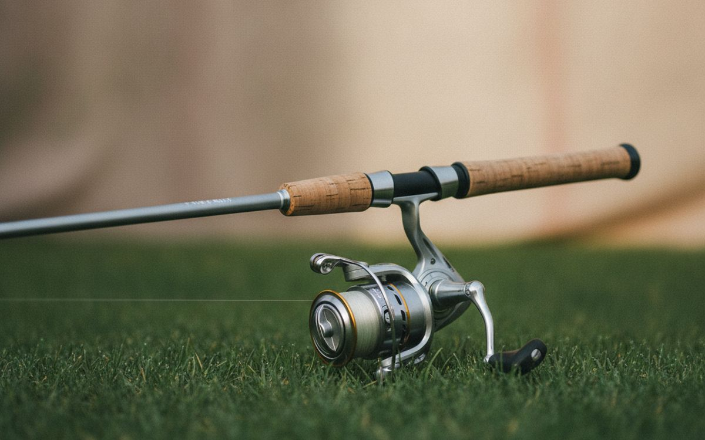
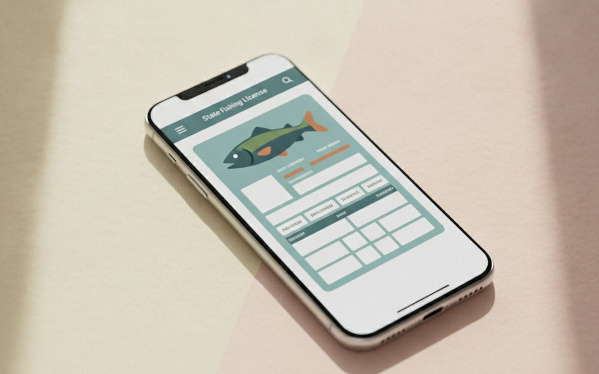
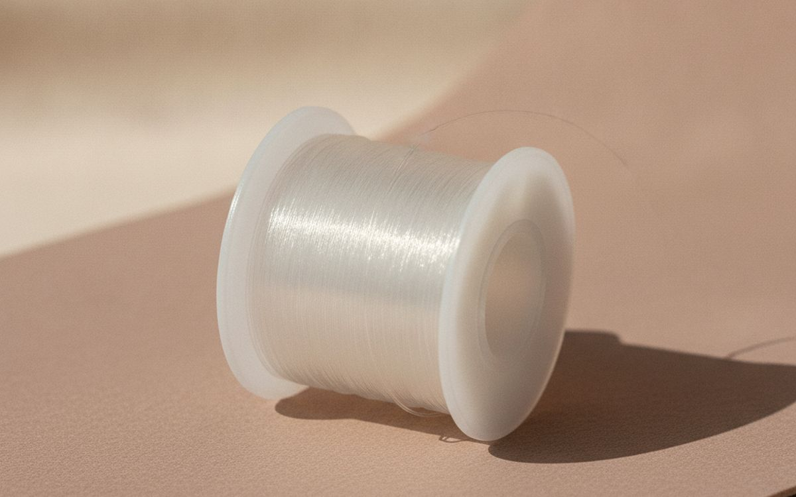
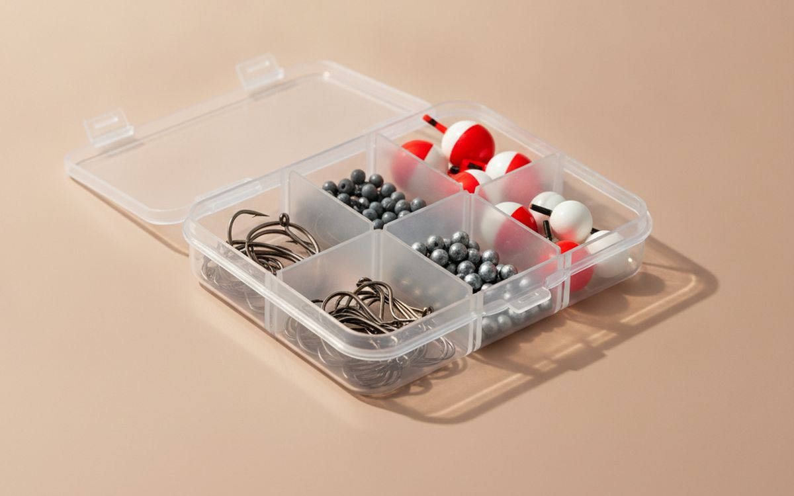
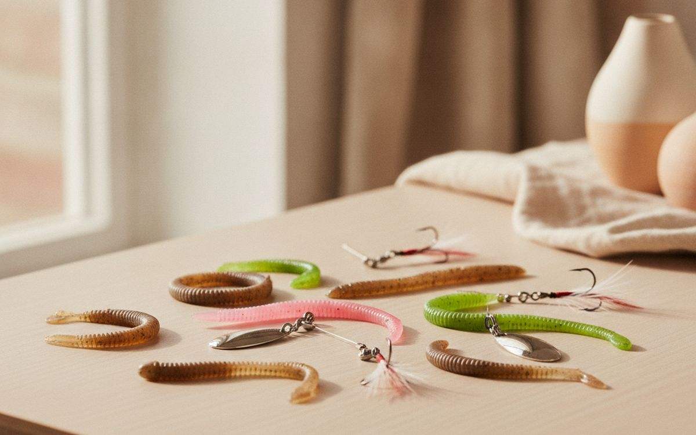
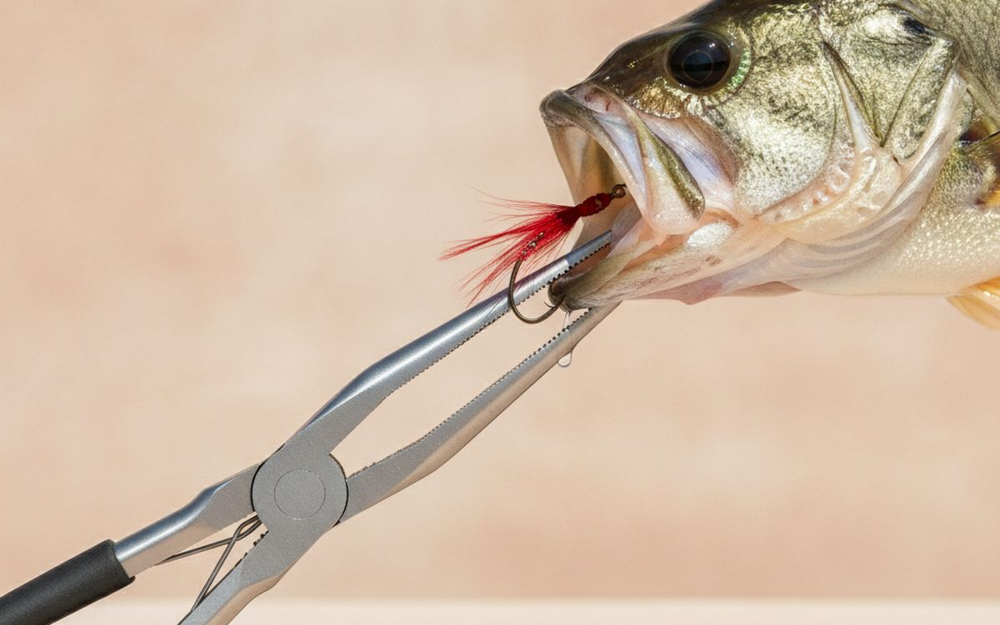
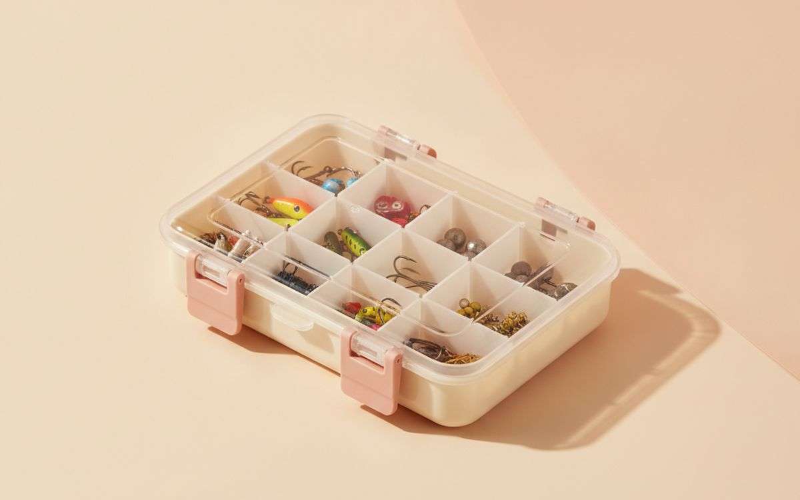
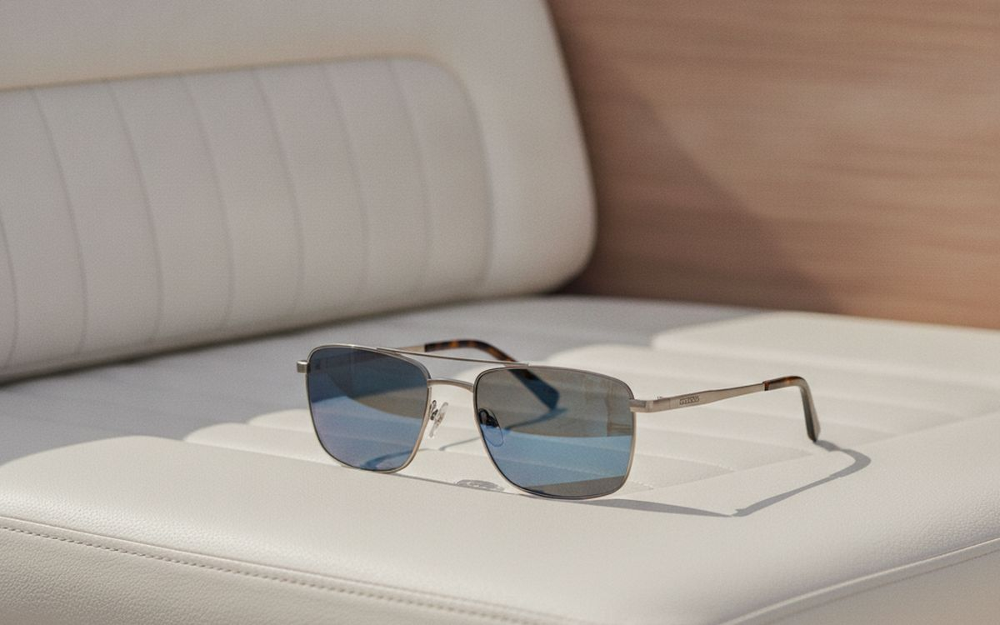
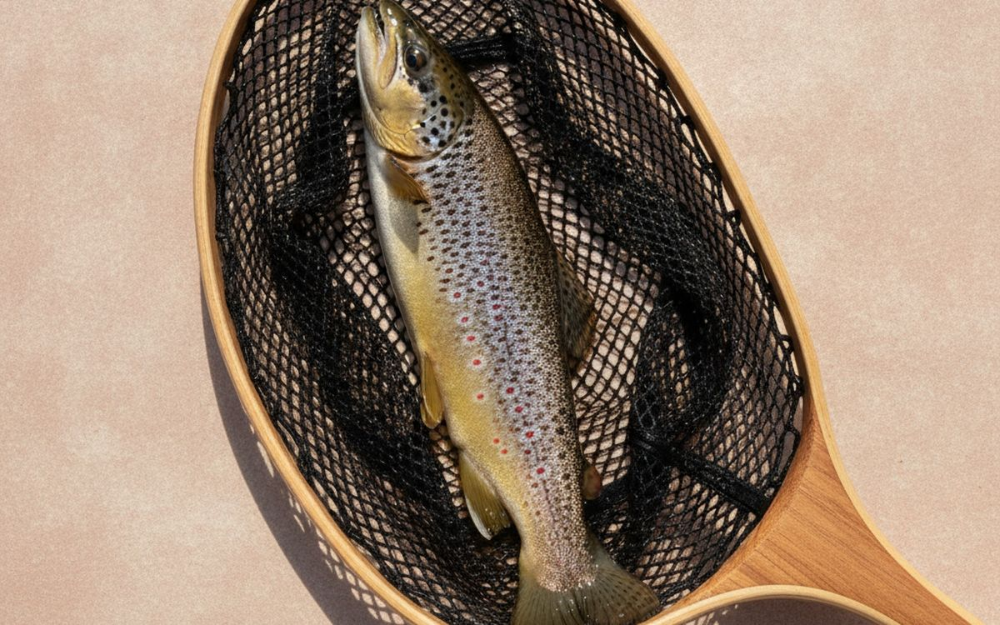
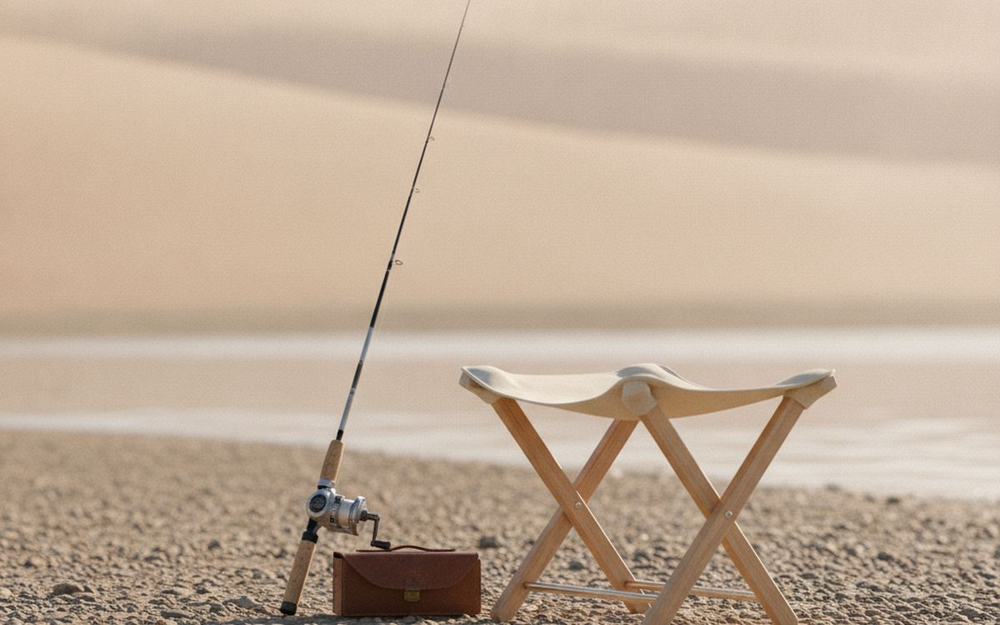

Beginners are often sold the wrong fishing kit: giant tackle boxes of lures that will never get used, baitcasting reels that tangle into bird's nests, or a toy rod that breaks on the first decent fish. Most people who give up fishing do so after a frustrating first few trips, not because the fish were not biting.
This list is ordered by what helps a new angler catch fish. A simple spinning combo, the right line and a small set of hooks and weights will catch most freshwater fish in the US. Everything after that is comfort and convenience.
Prices below are approximate street prices at the time of writing and move around constantly, especially during sale events. Treat them as a rough band for budgeting, not a quote. Always check the live listing before you buy.
בקצרה
A medium-light spinning rod and reel combo
The rod to start with
גילוי נאות. הקישורים בעמוד הזה הם קישורי שותפים. אם תקנו דרכם אנחנו עשויים להרוויח עמלה, בלי תוספת עלות לכם. זה לא משפיע על מה שנכנס לרשימה או על הסדר שלו.
איך בחרנו
These picks come from state wildlife agency guidance, angling communities and long-run owner reports, cross-checked against current retail listings. We have not personally tested every item here. Fishing rules vary by state and water body, so check your state's regulations before you go.
השוואה מהירה
המחירים הם הערכה נכון לזמן הכתיבה ומשתנים לעיתים קרובות.
הבחירות

01 · The rod to start withA medium-light spinning rod and reel combo
A spinning reel hangs under the rod and is by far the easiest type to cast and the least likely to tangle. A 6 to 7-foot medium-light rod handles bass, trout, panfish and catfish in most lakes and rivers. Ready-matched combos from brands like Ugly Stik, Shakespeare and Penn are cheap and tough. Skip baitcasting reels until you have some experience; they tangle easily for beginners. The case for it: easiest reel to learn, handles most freshwater fish, and tough and cheap. The trade-off is real: not built for big saltwater fish and cheap combos may come with poor line, so weigh that against how often it would actually get used.
$40-90על מה מוותרים: Not built for big saltwater fish
בעד
- Easiest reel to learn
- Handles most freshwater fish
- Tough and cheap
נגד
- Not built for big saltwater fish
- Cheap combos may come with poor line

02 · Fishing legallyA state fishing licence
In most US states, adults need a licence to fish, and fines for fishing without one are real. Licences are sold online by each state's wildlife agency, and many states have cheap short-term or free fishing days. Each state also has size and bag limits and seasons for different species. Keep a copy on your phone. The case for it: required in most states, funds conservation, and cheap short-term options exist. The trade-off is real: rules differ by state and water and children often fish free but check your state, so weigh that against how often it would actually get used.
$15-60 per yearעל מה מוותרים: Rules differ by state and water
בעד
- Required in most states
- Funds conservation
- Cheap short-term options exist
נגד
- Rules differ by state and water
- Children often fish free but check your state

03 · Easy handling6-8lb monofilament line
The line that comes on cheap combos is often stiff and tangles. Fresh 6-8lb monofilament is forgiving, stretches a little to absorb a fish's pull and is easy to tie knots in. Fill the reel to just below the rim; overfilling causes tangles. Replace line every season or when it gets kinky. The case for it: forgiving and easy to knot, fewer tangles, and cheap. The trade-off is real: degrades in sunlight over time and do not leave old line on the bank; it harms wildlife, so weigh that against how often it would actually get used.
$6-12על מה מוותרים: Degrades in sunlight over time
בעד
- Forgiving and easy to knot
- Fewer tangles
- Cheap
נגד
- Degrades in sunlight over time
- Do not leave old line on the bank; it harms wildlife

04 · Bait fishingA small hook, weight and bobber assortment
A bobber, a small split-shot weight and a hook with a worm catches more fish for beginners than any lure. A small assortment of sizes 6-10 hooks, split shot and a few bobbers covers most panfish, trout and catfish. It is the simplest setup there is, and it is how most people catch their first fish. The case for it: catches the most fish for beginners, cheap and simple, and works almost everywhere. The trade-off is real: needs live or prepared bait and check if live bait is allowed in your water, so weigh that against how often it would actually get used.
$10-20על מה מוותרים: Needs live or prepared bait
בעד
- Catches the most fish for beginners
- Cheap and simple
- Works almost everywhere
נגד
- Needs live or prepared bait
- Check if live bait is allowed in your water

05 · Fishing without baitA few soft plastic lures and inline spinners
Once you are catching fish on bait, a few lures let you cover more water. Soft plastic worms and inline spinners like the Mepps style are simple and effective for bass and trout. Buy a small handful in natural colours rather than a huge box. Learn to fish two lures well. The case for it: no bait needed, cover more water, and fun and active. The trade-off is real: lures snag and get lost and big kits are mostly filler, so weigh that against how often it would actually get used. For $15-25, it is a small, low-risk addition to the list rather than a centrepiece purchase you need to think hard about.
$15-25על מה מוותרים: Lures snag and get lost
בעד
- No bait needed
- Cover more water
- Fun and active
נגד
- Lures snag and get lost
- Big kits are mostly filler

06 · Unhooking fish safelyLong-nose pliers and a line cutter
Removing a hook by hand is hard on the fish and your fingers. Long-nose pliers reach in and remove hooks quickly, which matters if you release fish. A pair with a built-in line cutter saves carrying scissors. Stainless or aluminium resist rust. The case for it: quick, safe unhooking, better for released fish, and cuts line too. The trade-off is real: cheap steel rusts fast and keep on a lanyard so it does not go overboard, so weigh that against how often it would actually get used. Priced around $10-20, it is easy to justify even if it only ends up getting occasional rather than daily use.
$10-20על מה מוותרים: Cheap steel rusts fast
בעד
- Quick, safe unhooking
- Better for released fish
- Cuts line too
נגד
- Cheap steel rusts fast
- Keep on a lanyard so it does not go overboard

07 · Keeping it organisedA small tackle box or bag
Hooks and weights loose in a bag tangle and get lost. A small divided box or a soft tackle bag with a few trays keeps things organised and easy to find. Start small; you do not need a three-tier box. The case for it: keeps tackle organised, easy to carry, and cheap. The trade-off is real: small boxes fill fast and cheap latches break, so weigh that against how often it would actually get used. At $15-30, it earns its place on this list without asking for a big up-front commitment either way.
$15-30על מה מוותרים: Small boxes fill fast
בעד
- Keeps tackle organised
- Easy to carry
- Cheap
נגד
- Small boxes fill fast
- Cheap latches break

08 · Seeing into the waterPolarised sunglasses
Polarised lenses cut glare off the water so you can see fish, weeds and rocks below the surface. They also protect your eyes from flying hooks and the sun. A cheap pair of genuinely polarised glasses makes a big difference. The case for it: see fish and structure underwater, eye protection from hooks, and reduces glare. The trade-off is real: cheap pairs may not be truly polarised and can make phone screens hard to read, so weigh that against how often it would actually get used. For $20-40, it is a small, low-risk addition to the list rather than a centrepiece purchase you need to think hard about.
$20-40על מה מוותרים: Cheap pairs may not be truly polarised
בעד
- See fish and structure underwater
- Eye protection from hooks
- Reduces glare
נגד
- Cheap pairs may not be truly polarised
- Can make phone screens hard to read

09 · Landing fish gentlyA rubber landing net
Lifting a fish out by the line can break it off. A landing net makes it easier and safer. Rubber mesh is gentler on fish than knotted nylon and hooks do not tangle in it. A folding or telescoping handle is easier to carry. The case for it: fewer lost fish, gentle on released fish, and hooks do not snag rubber mesh. The trade-off is real: bulky to carry and heavier than nylon nets, so weigh that against how often it would actually get used. Priced around $20-40, it is easy to justify even if it only ends up getting occasional rather than daily use.
$20-40על מה מוותרים: Bulky to carry
בעד
- Fewer lost fish
- Gentle on released fish
- Hooks do not snag rubber mesh
נגד
- Bulky to carry
- Heavier than nylon nets

10 · Long sessions on the bankA folding stool or bucket seat
Fishing involves a lot of waiting, and standing gets tiring. A light folding stool or a bucket with a padded lid gives you a seat and somewhere to store tackle. The bucket also carries fish or bait. The case for it: comfortable for long sessions, bucket seats store gear, and cheap. The trade-off is real: one more thing to carry and cheap stools wobble on soft ground, so weigh that against how often it would actually get used. At $15-30, it earns its place on this list without asking for a big up-front commitment either way.
$15-30על מה מוותרים: One more thing to carry
בעד
- Comfortable for long sessions
- Bucket seats store gear
- Cheap
נגד
- One more thing to carry
- Cheap stools wobble on soft ground
שאלות נפוצות
What is the best fishing setup for beginners?
A medium-light spinning combo with 6-8lb line, a hook, a split shot and a bobber, fished with a worm.
Do I need a fishing licence?
Most US states require one for adults. Check your state's wildlife agency website.
Spinning or baitcasting reel?
Spinning for beginners. Baitcasters tangle easily until you have experience.
What is the best bait for beginners?
Worms. They catch almost every freshwater fish.
הדילים של היום
ראו מה מוזל עכשיו.
דילים →← כל המדריכים
כשותפים של עליאקספרס אנחנו מרוויחים עמלה מרכישות מזכות. המחירים והזמינות נכונים לזמן הפרסום ועשויים להשתנות.